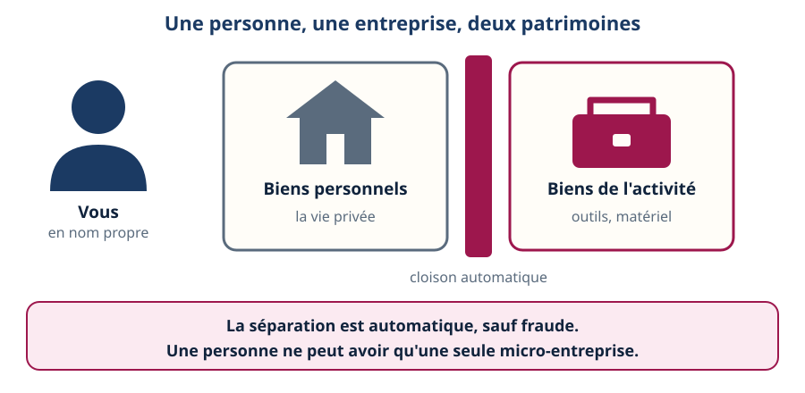
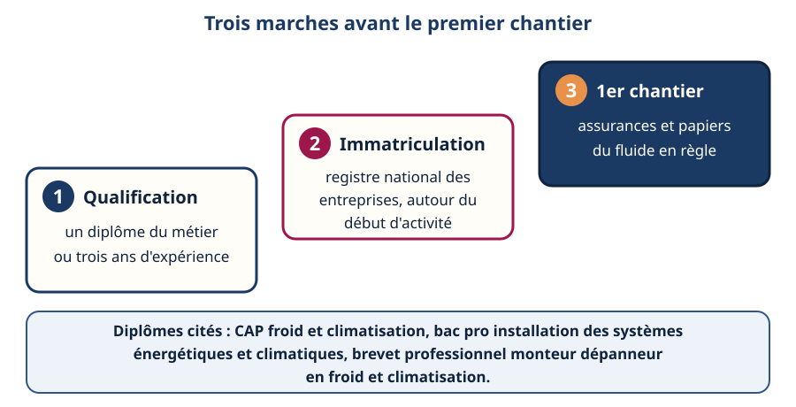
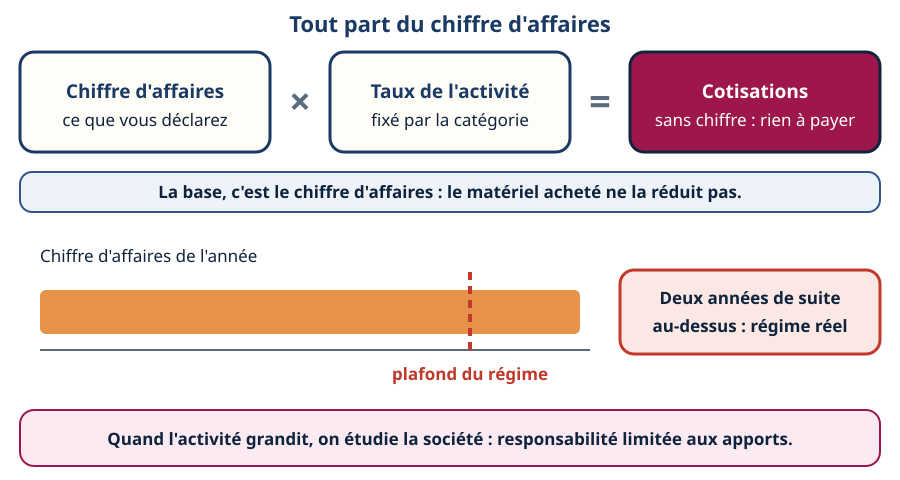
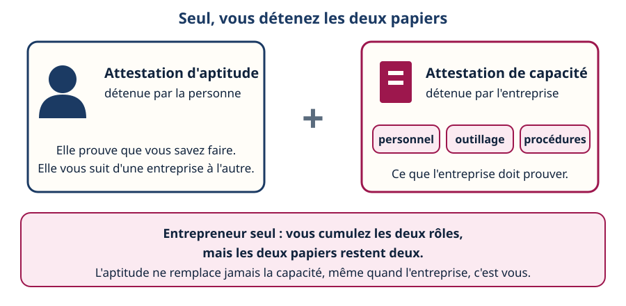
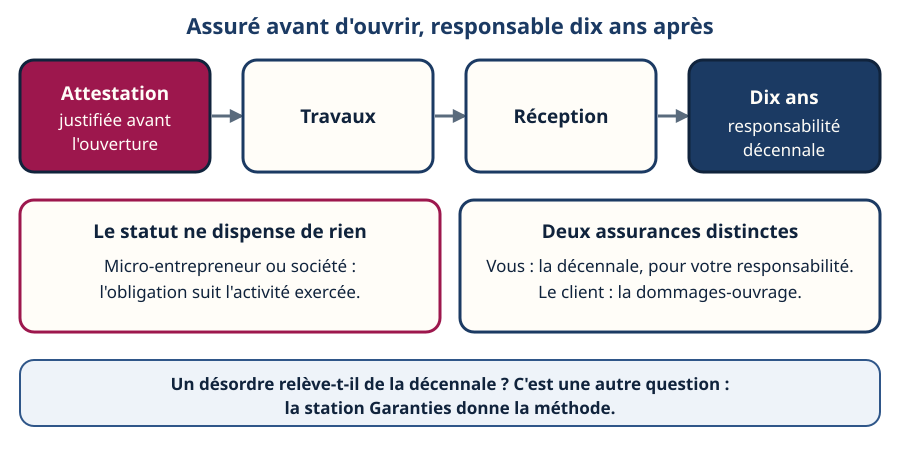
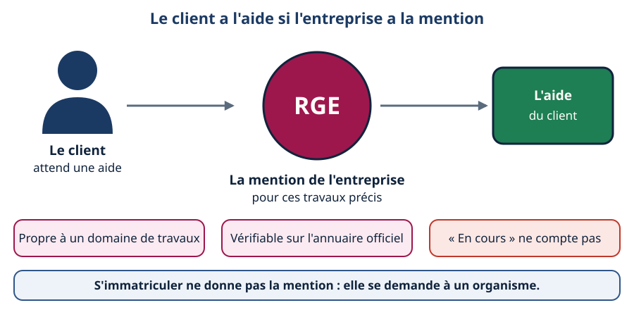
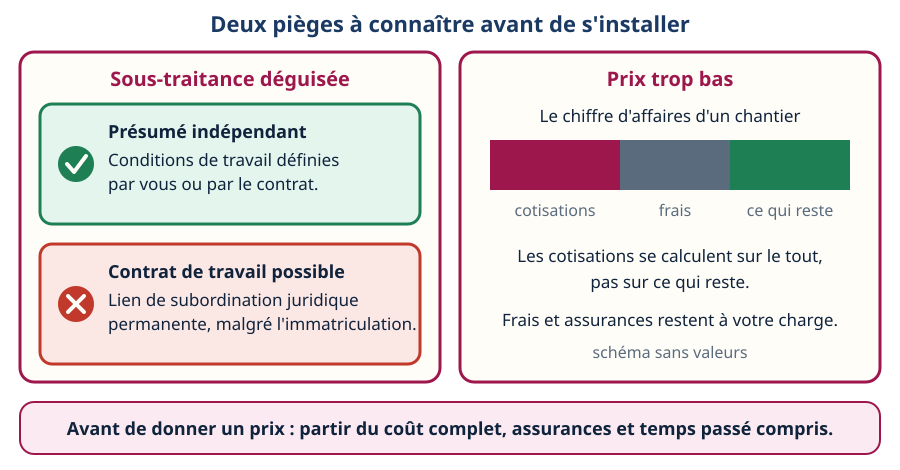
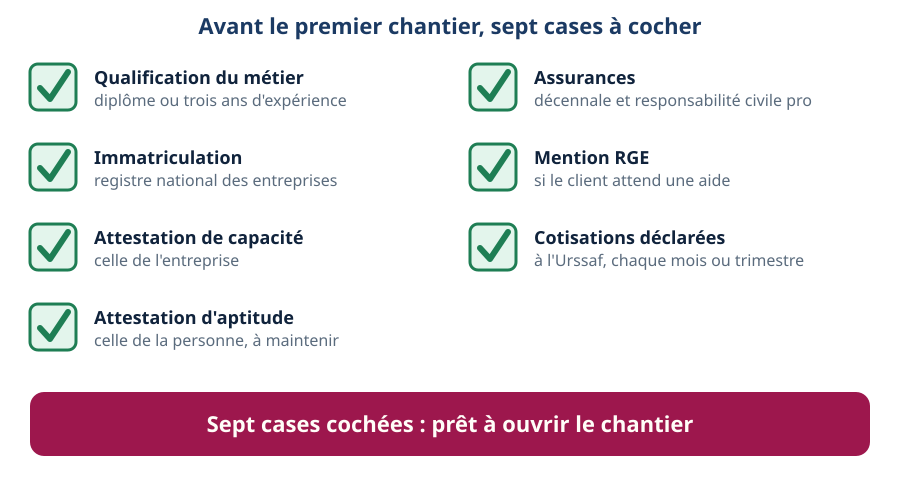

Mini-station commentée · 8 écrans et 4 questions · environ 10 minutes
Objectif
À la fin de la station, vous savez ce qu'il faut avoir avant de toucher un fluide quand on s'installe à son compte : le droit d'exercer, la façon dont les cotisations se calculent sur le chiffre d'affaires, l'attestation de capacité, l'assurance décennale, la mention RGE qui ouvre les aides du client — et les deux pièges qui guettent le débutant, la sous-traitance déguisée et le prix trop bas.
Référentiel : TP TECVC, REAC TP-00133 — hors REAC : culture professionnelle du technicien et du chargé d'affaires. Aucune des compétences CP1 à CP10 ne porte sur la création d'entreprise. Pont avec l'attestation d'aptitude 2025 : code 1.00 (législation applicable), pour l'attestation de capacité de l'entreprise.
Chaque écran peut être expliqué à voix haute : le bouton « Écouter » commente ce que vous voyez. Rien n'est dit qui ne soit aussi écrit.
1 / 12
Écran 1 sur 8
À son compte : une personne, une entreprise
Le micro-entrepreneur (on dit encore « auto-entrepreneur ») est un entrepreneur individuel : il n'y a pas de société à créer. Il bénéficie de règles fiscales et sociales simplifiées, pas d'un métier simplifié.
Son patrimoine professionnel est séparé automatiquement de son patrimoine personnel — sauf fraude.
Une même personne ne peut avoir qu'une seule micro-entreprise.
À la différence d'une société à responsabilité limitée, il agit en son nom propre : c'est lui, en personne, qui répond de l'activité, sur ses biens utiles à l'activité.
À retenir : le statut simplifie la comptabilité et les cotisations. Il ne supprime aucune obligation du métier : diplôme, attestations, assurances — les écrans suivants.

La cloison rose sépare la vie privée de l'activité — elle n'est pas une société.
Écran 2 sur 8
Le droit d'exercer : qualification et immatriculation
Installer et entretenir du froid ou de la climatisation est une activité artisanale. Deux conditions viennent avant tout chantier :
La qualification professionnelle. Pour le climaticien : un diplôme du métier — CAP installateur thermique ou CAP froid et climatisation, bac pro technicien en installation des systèmes énergétiques et climatiques, brevet professionnel monteur dépanneur en froid et climatisation — ou, à défaut, trois années d'expérience professionnelle effective dans l'Union européenne ou l'Espace économique européen.
L'immatriculation au registre national des entreprises, entre un mois avant et quinze jours après le début de l'activité : c'est elle qui donne la qualité d'artisan.
Pour un BTS : votre diplôme entre dans cette liste de qualifications, car le code admet tout diplôme du métier de niveau égal ou supérieur au CAP (Code de l'artisanat, art. R121-1). Il ne remplace ni l'immatriculation ni les attestations fluides.

Les marches s'allument dans l'ordre : on ne saute pas la première.
Écran 3 sur 8
Le chiffre d'affaires commande tout
Cotisations = taux × chiffre d'affaires. Un pourcentage fixe, dont le taux dépend de la catégorie d'activité (vente, prestation de services, profession libérale). Déclaration et paiement en ligne à l'Urssaf, chaque mois ou chaque trimestre selon l'option choisie. Sans chiffre d'affaires : pas de cotisation.
La base n'est pas le bénéfice. Le matériel, les déplacements, l'assurance ne la réduisent pas.
Un plafond de chiffre d'affaires borne le régime, différent pour la vente et pour la prestation de services. Deux années de suite au-dessus : régime réel d'imposition. On peut aussi choisir ce régime avant.
Quand l'activité grandit : on étudie une société (EURL, SASU…). La responsabilité de l'associé unique est limitée à ses apports, sauf faute de gestion ; en échange, statuts, comptes annuels à déposer, protection sociale et cotisations du dirigeant différentes.
Aucun taux, aucun plafond n'est écrit ici : ils sont revus chaque année. On les lit sur le site de l'Urssaf et sur service-public.gouv.fr le jour où l'on calcule.

La chaîne du haut se déroule d'abord ; la barre grandit ensuite et franchit le plafond.
Écran 4 sur 8
Avant de toucher un fluide : deux papiers, une seule personne
La micro-entreprise ne change rien à la règle des fluides frigorigènes : il faut les deux attestations.
L'attestation d'aptitude est à la personne : c'est vous. Depuis le régime de 2025, elle n'est plus acquise à vie (remise à niveau tous les 7 ans).
L'attestation de capacité est à l'entreprise : elle suppose du personnel titulaire de l'aptitude, de l'outillage de récupération, de détection et de mesure, et des procédures de traçabilité.
Le piège du débutant : « l'entreprise, c'est moi, donc mon aptitude suffit ». Non : entrepreneur seul, vous cumulez les deux rôles, mais chaque papier garde son titulaire. Une entreprise sans capacité ne peut pas exercer, même si son unique technicien est parfaitement attesté.

Seul dans l'entreprise, vous restez titulaire de deux papiers distincts.
Écran 5 sur 8
L'assurance décennale : avant d'ouvrir le chantier
Code des assurances, art. L241-1 : toute personne dont la responsabilité décennale peut être engagée doit être couverte par une assurance, dont elle justifie à l'ouverture du chantier.
La responsabilité dure dix ans à compter de la réception. Ne pas s'assurer expose à des sanctions pénales.
Micro-entrepreneur ou non : l'assurance dépend de l'activité exercée, pas du statut. En plus, la responsabilité civile professionnelle est exigée d'un climaticien qui exerce à titre libéral.
À ne pas confondre : la décennale est souscrite par vous ; la dommages-ouvrage est souscrite par le client.
Ce que cette station ne tranche pas : si tel désordre sur telle installation relève ou non de la décennale. C'est la méthode de la station Garanties.

Assuré avant d'ouvrir, responsable dix ans après.
Écran 6 sur 8
La mention RGE : pour que le client ait ses aides
Pour beaucoup d'aides à la rénovation énergétique, le client n'y a droit que si l'entreprise est RGE (« reconnu garant de l'environnement ») pour les travaux concernés.
La mention est propre à un domaine de travaux : RGE pour le bois n'est pas RGE pour la pompe à chaleur.
Elle se vérifie sur l'annuaire officiel des professionnels RGE.
« En cours de qualification » ne compte pas.
S'immatriculer ne la donne pas : elle est délivrée par un organisme de qualification ou de certification.
Réflexe : dire au client, avant le devis, si l'entreprise a la mention pour ces travaux. Le détail est dans la station RGE & QualiPAC.

La flèche de l'aide passe par la mention de l'entreprise.
Écran 7 sur 8
Deux pièges : la sous-traitance déguisée et le prix trop bas
1. La sous-traitance déguisée. Un ancien employeur vous propose de « passer en auto-entrepreneur » pour faire les mêmes chantiers, avec les mêmes consignes ? Le Code du travail (art. L8221-6) présume non salarié celui qui est immatriculé, mais précise qu'un contrat de travail peut être établi s'il fournit ses prestations « dans des conditions qui les placent dans un lien de subordination juridique permanente ». L'art. L8221-6-1 présume indépendant celui dont les conditions de travail sont « définies exclusivement par lui-même ou par le contrat les définissant avec son donneur d'ordre ». La question à poser : qui fixe mes conditions de travail ?
Côté donneur d'ordre (chargé d'affaires, bureau d'études), le risque existe aussi : un donneur d'ordre condamné pour travail dissimulé doit payer les cotisations sociales dues.
2. Le prix trop bas. Les cotisations se calculent sur le chiffre d'affaires, pas sur ce qui vous reste ; les frais et les assurances restent à votre charge. Un prix qui ne couvre pas le coût complet — assurances, déplacements, temps d'étude et de devis — fait travailler à perte.

À gauche, qui fixe vos conditions de travail ; à droite, ce qui reste vraiment du chiffre d'affaires.
Écran 8 sur 8
Bilan : la check-list de l'installation
☐ Qualification du métier : diplôme, ou trois ans d'expérience (écran 2).
☐ Immatriculation au registre national des entreprises (écran 2).
☐ Attestation de capacité de l'entreprise (écran 4).
☐ Attestation d'aptitude de la personne, à maintenir (écran 4).
☐ Assurances : décennale et responsabilité civile professionnelle (écran 5).
☐ Mention RGE si le client attend une aide (écran 6).
☐ Cotisations déclarées à l'Urssaf (écran 3) — et prix calculé sur le coût complet (écran 7).
Le réflexe : cocher les sept cases avant d'ouvrir le chantier, et relire taux et plafonds sur les sites officiels.

Dans l'animation, les cases se cochent une à une ; à la fin, les sept sont cochées.
Question 1 sur 4
Cotisations du micro-entrepreneur : elles se calculent sur…
Rappel de l'écran 3 — la base est le chiffre d'affaires.
Question 2 sur 4
Seul, avec votre attestation d'aptitude : que faut-il encore pour intervenir sur un fluide ?
Rappel de l'écran 4 — deux papiers, même quand on est seul.
Question 3 sur 4
Micro-entrepreneur du bâtiment : l'assurance décennale est…
Rappel de l'écran 5 — assuré avant d'ouvrir le chantier.
Question 4 sur 4
Immatriculé, mais placé en subordination juridique permanente : que dit le Code du travail ?
Rappel de l'écran 7 — la carte rouge de la sous-traitance déguisée.
Les correspondances de la station
Aptitude & capacité (Fluidique & thermique)
— les deux papiers du fluide : l'aptitude est à la personne, la capacité à l'entreprise, et l'aptitude se maintient.
Les garanties (Certifications & normes)
— la décennale se justifie à l'ouverture du chantier ; la station donne la méthode pour dire si un désordre en relève.
RGE & QualiPAC (Certifications & normes)
— la mention qui ouvre les aides du client, propre à un domaine de travaux et vérifiable sur l'annuaire officiel.
Se former (Droit du travail)
— la qualification et les attestations s'obtiennent et se maintiennent par la formation.